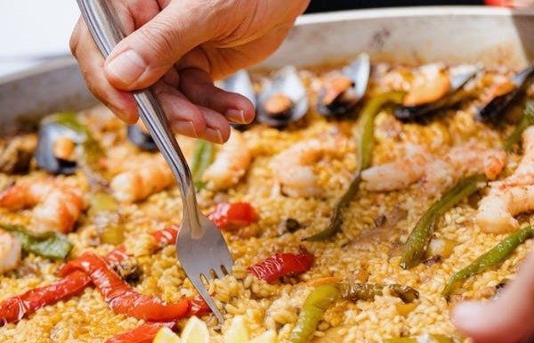

Paella
Preparar un arroz con mariscos, pollo y vegetales en una paellera.
Preparar un arroz con mariscos, pollo y vegetales en una paellera.
Hacer una tortilla de patatas con huevo, cebolla y papas.
Mezclar tomates, pepinos y pimientos para hacer una sopa fría.
Freír tiras de masa dulce y espolvorear con azúcar.
Preparar un guiso de fabes con chorizo y morcilla.